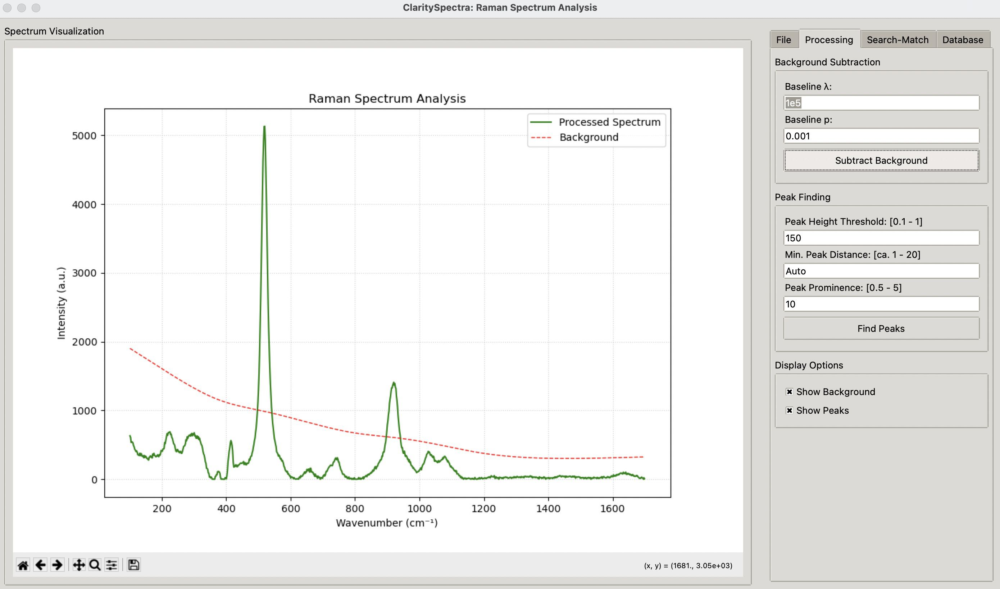
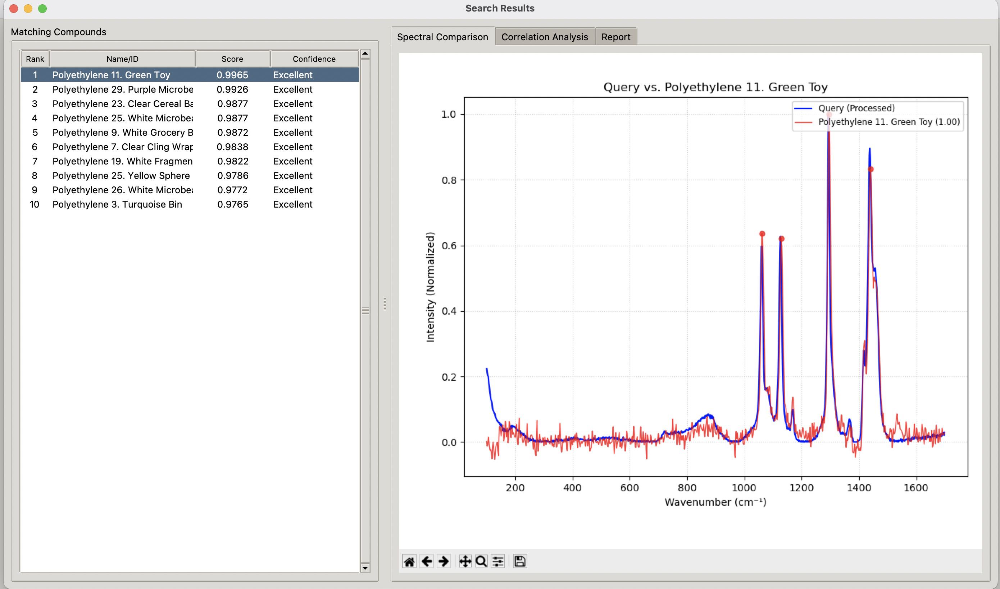

ClaritySpecra User Manual v1
Table of Contents
- Introduction
- Installation
- Getting Started
- Importing Spectra
- Spectrum Processing
- Database Management
- Search and Matching
- Data Export
- Troubleshooting
- Appendices
1. Introduction
The Raman Spectrum Analysis Tool is a comprehensive software package for importing, analyzing, and identifying Raman spectra. This application is designed for researchers, geologists, materials scientists, and other professionals who work with Raman spectroscopy data.
1.1 Key Features
- Import Raman spectra from various file formats
- Baseline correction and peak detection
- Spectrum database management
- Advanced search and matching algorithms
- Hey Classification integration for mineral identification
- Customizable visualization options
- Export capabilities for reports and results
2. Installation
2.1 System Requirements
- Operating System: Windows 10/11, macOS 10.14+, or Linux
- Processor: 1.6 GHz or faster
- RAM: 4 GB minimum (8 GB recommended)
- Storage: 500 MB free space
- Display: 1280 x 800 or higher resolution
2.2 Installation Steps
- Download the installer package from the official website
- Run the installer and follow the on-screen instructions
- Launch the application from your Start menu, Applications folder, or desktop shortcut
2.3 Manual Installation (Advanced Users)
If you prefer to install from source:
- Ensure Python 3.8+ is installed on your system
- Clone the repository: git clone https://github.com/username/raman-analyzer.git
- Navigate to the project directory: cd raman-analyzer
- Install required dependencies: pip install -r requirements.txt
- Run the application: python raman_analysis_app.py
2.4 Database Installation
The database is too large for me to have on GitHub (25MB limit). There two options:
- Download a precompiled database with Hey Index classification already down
- This is the easiest: goto https://drive.google.com/file/d/1LZ8Tp0jGij4VUVILiDvyl9RFyf7H8KaW/view?usp=drive_link
- Put this file in the same folder as all the *.py files. ClaritySpec will recognize and and load it (don’t change the filename).
- Build the database yourself
- You only need a bunch of spectra in a folder.
- You can get these from rruff.info
- Goto the Database tab and in the Database management area, click on Batch Import Spectra
- don’t worry if this looks like it is not responding, depending on the database size (RRUFF is about 6,000 spectra) it could take 20 or 30 minutes. You can can see the *.pkl file changing size as the database is changing. That is your indication that things are ok.
- Once that is done, you can add the Hey Classification by clicking the Update Hey Classification. This is pretty quick.
- You only need a bunch of spectra in a folder.
3. Getting Started
3.1 Application Interface Overview
When you first open the application, you'll see a window divided into two main sections:
- Left panel: Spectrum visualization area
- Right panel: Control tabs (File, Processing, Search, Database)
3.2 Navigation
The right panel contains four tabs that organize the application's functionality:
- File: Import, save, and manage spectrum metadata
- Processing: Background subtraction and peak finding operations
- Search-Match: Search database for matching spectra
- Database: Add, remove, and browse spectra in the database
4. Importing Spectra Into The Database
4.1 Supported File Formats
The application supports various text-based formats containing Raman spectrum data:
- CSV (comma-separated values)
- TXT (tab or space-delimited)
- Custom formats with metadata headers (lines starting with # have meta information)
4.2 Importing a Single Spectrum
- Click the File tab in the right panel
- Click the Import Spectrum button
- Browse to locate your spectrum file
- Select the file and click Open
The spectrum will appear in the visualization panel, and any metadata from the file will be displayed in the Metadata section.
4.3 Batch Import
For importing multiple spectra at once:
- Go to the Database tab
- Click Batch Import Spectra
- Select a folder containing multiple spectrum files
- Monitor the progress in the import window
- Click Close when the import is complete
5. Spectrum Processing
5.1 Background Subtraction
To remove background fluorescence from your spectrum:
- Select the Processing tab
- Adjust the baseline parameters:
- λ (lambda): Controls smoothness (higher values = smoother baseline)
- p: Controls asymmetry (lower values = more fitting to peaks)
- Click Subtract Background
- If you don’t like how the background fit, then import the data again.
- A fast way to import the data again is: File > Import Spectrum, that way you are not switching between tabs.
The processed spectrum will appear in the visualization panel.
5.2 Peak Finding
To detect peaks in your spectrum:
- In the Processing tab, adjust the peak detection parameters:
- Peak Height Threshold: Minimum intensity for peak detection
- Min. Peak Distance: Minimum separation between peaks
- Peak Prominence: How much a peak stands out from surrounding baseline
- Click Find Peaks
- Keep changing the values until you are satisfied
- Numbers in the [ ] are suggested values
Detected peaks will be marked on the spectrum with red dots and labeled with their wavenumber positions.
5.3 Display Options
Customize the visualization with the display options:
- Show Background: Toggle display of the estimated background
- Show Peaks: Toggle display of detected peaks
6. Database Management
6.1 Adding Spectra to Database
After importing and processing a spectrum:
- Go to the Database tab
- Enter a name for the spectrum in the Spectrum Name field
- Click Add Current Spectrum
The spectrum and its metadata will be saved to the database.
6.2 Viewing the Database
To browse the database contents:
- In the Database tab, click View/Search Database
- A new window will open showing all database entries
- Use the search field to filter entries
- Select an entry to view its details
6.3 Editing Metadata
To edit metadata for a spectrum:
- Select a spectrum in the database viewer
- Click Edit Metadata
- Modify the fields in the metadata editor
- Click Save Metadata when finished
6.4 Hey Classification
The application integrates Hey Classification for mineral identification:
- Click Update Hey Classification to update all database entries
- Or use the metadata editor to lookup Hey Classification for individual entries
7. Search and Matching
7.1 Basic Search
To find spectra similar to your current spectrum:
- Go to the Search tab
- Set the desired number of matches and similarity threshold
- Select a matching algorithm:
- Combined: Uses correlation, peak matching, and MSE (recommended)
- Correlation: Based on spectral correlation coefficient only
- Peak Matching: Compares peak positions only (first using Find Peaks for this to work)
- Click Search Match
7.2 Advanced Search
For more targeted searches:
- Select the Advanced Search sub-tab
- Enter specific peak positions to search for
- Set the peak tolerance (in cm⁻¹)
- Select a Hey Classification filter if desired
- Click Advanced Search
7.3 Interpreting Results
Search results appear in a new window with three tabs:
- Spectral Comparison: Visual comparison between query and match
- Correlation Analysis: Heatmap showing regional correlation
- Report: Detailed text report of the match
The left panel shows all matches sorted by similarity score.
Search-Match Performance and Usage Comparisons
Execution Speed:
- Fastest: Correlation search (simple matrix operation)
- Medium: Peak-based search (set operations)
- Slowest: ML-based search (requires PCA computation)
- Moderate: Combined search (multiple calculations but optimized)
Memory Usage:
- Lowest: Peak-based search (only uses peak positions)
- Medium: Correlation search (full spectra but simple operations)
- Highest: ML-based search (stores transformed data in PCA space)
- Medium-High: Combined search (requires multiple metrics)
Effectiveness by Scenario:
|
Scenario |
Best Method |
|
Clean, high-quality spectra |
Correlation or Combined |
|
Noisy spectra with clear peaks |
Peak-based |
|
Spectra with baseline issues |
Peak-based or ML-based |
|
Complex mixtures |
ML-based or Combined |
|
General-purpose |
Combined (hence "Recommended") |
The application intelligently handles the choice of search algorithm based on user selection, and falls back to the Combined method if ML-based search is selected but scikit-learn is unavailable.
Examples
Example 1. A Mineral
For this example, I’ll use a mineral that has broad peaks and a moderately high background.

The figure above shows the background fitting and resulting spectrum. You can see the parameters I used in the figure.
Next, I went through all the different types of search methods, and found that the ML tool results in the best fitting (see below). This was expected as the data is noisier than one would like. Similar minerals like georgechaoite and gaidonayite also appeared in the result list (these are all similar minerals).

The heat map belowalso shows a good fit in the med and mid finger print regions. The lattice modes didn’t fit all that well, but this was a non dominant part of the spectrum.

It’s best to explore and test different approaches and use the tools as a guide.
Example 2. Plastic
After background subtraction and peak searching, the ML search tool found a near perfect fit to polyethylene. This particular piece was found inside a turtle.
Example 3. A Liquid
For this example, I want to see the H2O / OH vibrational modes and the anion vibrational modes. I’m not expecting a good fit because there are no liquid Raman spectra in my database. But, maybe I can find something similar and see the general molecular composition of the liquid.

Doing a Combined search, you can see that only sulfate minerals are shown, indicating, that the spectrum is a sulfate salt saturated solution. Heatmap plot shows really good fitting at the mid finger print region, but poor fitting at the CH/OH region (because the data base didn’t go out that far). Clicking on the report will reveal all the details of the Match results.

8. Data Export
8.1 Exporting Spectra
To save the current spectrum:
- Go to the File tab
- Click Save Current Spectrum
- Choose a location and format
- Click Save
8.2 Exporting Reports
After performing a search, you can export the results:
- Go to the Report tab in the results window
- Click one of the export buttons:
- Export as PDF: Creates a formatted PDF report
- Export as Text: Saves as plain text
- Export as CSV: Creates a spreadsheet-compatible file
9. Troubleshooting
9.1 Common Issues
Application Won't Start And If It Does, I Don’t See The Controls
- Ensure your system meets the minimum requirements
- If a window pops-up, expand the window as some systems don’t read my default window sizes
Import Errors
- Verify the file format is supported
- Check that the file is not corrupted
- Ensure file contains both wavenumber and intensity columns
Processing Issues
- Try different baseline parameters for difficult spectra
- Use "Auto" settings for peak detection on first attempt
- For noisy spectra, consider preprocessing with smoothing so that ClaritySpec can find the peaks
9.2 Getting Help
For additional support:
- Check this document :)
- Contact me acelestian@nhm.org but please allow me a bit of time to get back to you.
10. Appendices
10.1 Keyboard Shortcuts
These may not work on all systems.
- Ctrl+I: Import spectrum
- Ctrl+S: Save spectrum
- Ctrl+B: Subtract background
- Ctrl+P: Find peaks
- Ctrl+F: Search/match
- Ctrl+D: Add to database
10.2 File Format Specifications
The application works best with files in the following format:
# NAME: Quartz
# RRUFFID: R040031
# IDEAL CHEMISTRY: SiO2
# HEY CLASSIFICATION: D. Silicates - Tectosilicates
# LOCALITY: Brazil
# DESCRIPTION: Colorless, transparent
128.0 352
152.3 1245
206.5 867
...
Where the first column is wavenumber (cm⁻¹) and the second column is intensity.
10.3 Algorithm Descriptions
Baseline Correction
The application uses Asymmetric Least Squares Smoothing (ALS) for baseline correction, which iteratively fits a smoothed curve to the spectrum's baseline points.
Peak Finding
Peak detection uses the SciPy find_peaks function with customizable parameters for height, distance, and prominence.
Spectrum Matching
The combined matching algorithm uses a weighted combination of:
- Correlation coefficient (60%)
- Mean squared error (20%)
- Peak position overlap (20%)
Technical Details of Core Algorithms
Background Subtraction Using Asymmetric Least Squares (ALS)
The background subtraction method implemented in this software uses the Asymmetric Least Squares algorithm, which is particularly effective for removing fluorescence backgrounds from Raman spectra.
Mathematical Foundation
The ALS algorithm works by minimizing the following penalized least squares function:
S = sum_i w_i(y_i - z_i)² + λ sum_i [(∇²z)_i]²
Where:
- y_i is the observed spectrum intensity at point i
- z_i is the estimated baseline at point i
- w_i is an asymmetric weight (different for points above vs. below the baseline)
- λ is the smoothness parameter (controls how smooth the baseline is)
- ∇² is the second-order difference operator (approximates second derivative)
Algorithm Implementation
- Initialize weights w_i = 1 for all points
- For a set number of iterations (typically 10): a. Solve the penalized least squares problem for z using the current weights b. Update weights asymmetrically:
- If y_i > z_i (point above baseline): w_i = p (small value, e.g., 0.01)
- If y_i ≤ z_i (point at/below baseline): w_i = 1-p (large value, e.g., 0.99) c. Repeat with new weights
Parameter Effects
- λ (Lambda): Controls baseline smoothness
- Higher values (e.g., 1e7) create smoother baselines but may underfit
- Lower values (e.g., 1e3) allow more flexibility but may follow peaks
- Typical range: 1e5 to 1e7 for Raman spectra
- p (Asymmetry parameter): Controls fitting asymmetry
- Smaller values (e.g., 0.001) strongly favor fitting points below the curve
- Larger values (e.g., 0.1) allow more influence from points above (peaks)
- Typical range: 0.001 to 0.05 for Raman spectra
Implementation Efficiency
The implementation uses sparse matrices for computational efficiency:
- The second derivative operator is represented as a sparse difference matrix D
- The weighted least squares problem becomes a sparse linear system
- Solution via sparse solvers (spsolve) greatly reduces computation time and memory usage
Peak Finding Algorithm
The peak detection algorithm leverages SciPy's find_peaks function with specialized parameter handling for Raman spectra.
Algorithm Steps
- Determine if processed (background-subtracted) or raw spectrum should be used
- Calculate default parameter values if not specified by user:
- Height threshold = 5% of maximum intensity
- Distance = 1% of spectrum length (in data points)
- Prominence = 2% of maximum intensity
- Call SciPy's find_peaks function with these parameters
- Extract and store peak information:
- Indices in the original spectrum
- Corresponding wavenumber values
- Peak heights
- Additional properties (prominence, width, etc.)
Parameter Explanations
- Height: Minimum intensity value to be considered a peak
- Controls sensitivity to minor peaks
- Adaptive default: 5% of spectrum maximum
- Distance: Minimum separation between peaks
- Prevents detecting multiple points from the same peak
- Adaptive default: 1% of spectrum length
- Prominence: How much a peak stands out relative to surrounding baseline
- More robust than height for distinguishing real peaks
- Adaptive default: 2% of spectrum maximum
- Width: Optional constraint on peak width
- Useful for filtering out noise spikes vs. true Raman bands
- Not set by default, allowing all peak widths
Advanced Considerations
The algorithm incorporates several technical enhancements:
- Automatic parameter calculation based on spectrum characteristics
- Wavenumber mapping to associate peak indices with actual Raman shifts
- Property storage for advanced filtering in search algorithms
- Scale-invariant defaults that work across diverse intensity scales
Search-Match Algorithm
The search-match functionality implements a sophisticated multi-metric approach that combines spectral correlation, peak matching, and intensity distribution similarity.
Core Matching Metrics
1. Spectral Correlation Coefficient
- Pearson correlation coefficient between query and database spectra
- Measures overall spectral shape similarity
- Spectrum normalization (0-1 range) for scale invariance
- Wavenumber interpolation for consistent comparison
- Mathematical formula: r = cov(X,Y)/(σ_X·σ_Y)
2. Mean Squared Error (MSE)
- Quantifies point-by-point intensity differences
- Converted to similarity score using: score = 1/(1+10·MSE)
- More sensitive to local differences than correlation
- Complements correlation by focusing on absolute differences
3. Peak Position Matching
- Jaccard similarity between peak sets: |A∩B|/|A∪B|
- Peaks are rounded to integer wavenumbers for comparison
- Tolerance parameter allows for slight peak shifts
- More robust to baseline issues than full-spectrum metrics
Combined Scoring System
The final match score is a weighted combination:
- 60% Correlation coefficient
- 20% MSE-derived similarity
- 20% Peak position matching
This weighting scheme provides balanced sensitivity to overall spectral shape, intensity differences, and characteristic peak positions.
Search Optimization
Several optimizations enable efficient searching:
- Query spectrum is processed only once before comparison
- Database spectra are interpolated to query spectrum wavenumbers
- Normalization is applied dynamically during comparison
- Early filtering based on threshold reduces computation for large databases
- Vectorized operations for performance on large datasets
Advanced Search Capabilities
The advanced search enhances this core algorithm with:
- Peak position filtering (search by specific peaks of interest)
- Metadata-based filtering (Hey Classification)
- Customizable tolerance for peak matching
- Peak subset matching (match specific regions of interest)
This comprehensive approach enables nuanced spectral matching even in challenging cases with baseline issues, intensity variations, or partial spectral overlap.
Technical Details of Core Algorithms
Background Subtraction Using Asymmetric Least Squares (ALS)
The background subtraction method implemented in this software uses the Asymmetric Least Squares algorithm, which is particularly effective for removing fluorescence backgrounds from Raman spectra.
Mathematical Foundation
The ALS algorithm works by minimizing the following penalized least squares function:
S = sum_i w_i(y_i - z_i)² + λ sum_i [(∇²z)_i]²
Where:
- y_i is the observed spectrum intensity at point i
- z_i is the estimated baseline at point i
- w_i is an asymmetric weight (different for points above vs. below the baseline)
- λ is the smoothness parameter (controls how smooth the baseline is)
- ∇² is the second-order difference operator (approximates second derivative)
Algorithm Implementation
- Initialize weights w_i = 1 for all points
- For a set number of iterations (typically 10): a. Solve the penalized least squares problem for z using the current weights b. Update weights asymmetrically:
- If y_i > z_i (point above baseline): w_i = p (small value, e.g., 0.01)
- If y_i ≤ z_i (point at/below baseline): w_i = 1-p (large value, e.g., 0.99) c. Repeat with new weights
Parameter Effects
- λ (Lambda): Controls baseline smoothness
- Higher values (e.g., 1e7) create smoother baselines but may underfit
- Lower values (e.g., 1e3) allow more flexibility but may follow peaks
- Typical range: 1e5 to 1e7 for Raman spectra
- p (Asymmetry parameter): Controls fitting asymmetry
- Smaller values (e.g., 0.001) strongly favor fitting points below the curve
- Larger values (e.g., 0.1) allow more influence from points above (peaks)
- Typical range: 0.001 to 0.05 for Raman spectra
Implementation Efficiency
The implementation uses sparse matrices for computational efficiency:
- The second derivative operator is represented as a sparse difference matrix D
- The weighted least squares problem becomes a sparse linear system
- Solution via sparse solvers (spsolve) greatly reduces computation time and memory usage
Peak Finding Algorithm
The peak detection algorithm leverages SciPy's find_peaks function with specialized parameter handling for Raman spectra.
Algorithm Steps
- Determine if processed (background-subtracted) or raw spectrum should be used
- Calculate default parameter values if not specified by user:
- Height threshold = 5% of maximum intensity
- Distance = 1% of spectrum length (in data points)
- Prominence = 2% of maximum intensity
- Call SciPy's find_peaks function with these parameters
- Extract and store peak information:
- Indices in the original spectrum
- Corresponding wavenumber values
- Peak heights
- Additional properties (prominence, width, etc.)
Parameter Explanations
- Height: Minimum intensity value to be considered a peak
- Controls sensitivity to minor peaks
- Adaptive default: 5% of spectrum maximum
- Distance: Minimum separation between peaks
- Prevents detecting multiple points from the same peak
- Adaptive default: 1% of spectrum length
- Prominence: How much a peak stands out relative to surrounding baseline
- More robust than height for distinguishing real peaks
- Adaptive default: 2% of spectrum maximum
- Width: Optional constraint on peak width
- Useful for filtering out noise spikes vs. true Raman bands
- Not set by default, allowing all peak widths
Advanced Considerations
The algorithm incorporates several technical enhancements:
- Automatic parameter calculation based on spectrum characteristics
- Wavenumber mapping to associate peak indices with actual Raman shifts
- Property storage for advanced filtering in search algorithms
- Scale-invariant defaults that work across diverse intensity scales
Search-Match Algorithm
The search-match functionality implements a sophisticated multi-metric approach that combines spectral correlation, peak matching, and intensity distribution similarity.
Core Matching Metrics
1. Spectral Correlation Coefficient
- Pearson correlation coefficient between query and database spectra
- Measures overall spectral shape similarity
- Spectrum normalization (0-1 range) for scale invariance
- Wavenumber interpolation for consistent comparison
- Mathematical formula: r = cov(X,Y)/(σ_X·σ_Y)
2. Mean Squared Error (MSE)
- Quantifies point-by-point intensity differences
- Converted to similarity score using: score = 1/(1+10·MSE)
- More sensitive to local differences than correlation
- Complements correlation by focusing on absolute differences
3. Peak Position Matching
- Jaccard similarity between peak sets: |A∩B|/|A∪B|
- Peaks are rounded to integer wavenumbers for comparison
- Tolerance parameter allows for slight peak shifts
- More robust to baseline issues than full-spectrum metrics
Combined Scoring System
The final match score is a weighted combination:
- 60% Correlation coefficient
- 20% MSE-derived similarity
- 20% Peak position matching
This weighting scheme provides balanced sensitivity to overall spectral shape, intensity differences, and characteristic peak positions.
Search Optimization
Several optimizations enable efficient searching:
- Query spectrum is processed only once before comparison
- Database spectra are interpolated to query spectrum wavenumbers
- Normalization is applied dynamically during comparison
- Early filtering based on threshold reduces computation for large databases
- Vectorized operations for performance on large datasets
Advanced Search Capabilities
The advanced search enhances this core algorithm with:
- Peak position filtering (search by specific peaks of interest)
- Metadata-based filtering (Hey Classification)
- Customizable tolerance for peak matching
- Peak subset matching (match specific regions of interest)
This comprehensive approach enables nuanced spectral matching even in challenging cases with baseline issues, intensity variations, or partial spectral overlap.
Detailed Comparison of Search-Match Algorithms in ClaritySpectra
The Raman Analysis APPLication (RAPPL) implements four distinct search-match approaches, each with different strengths and technical characteristics. Here's a detailed breakdown of how each method works and their differences:
1. Correlation-Based Search
The correlation search (correlation_search method) is based on the statistical correlation between spectral shapes.
Technical Implementation:
- Normalizes both query and database spectra to a 0-1 range
- Interpolates database spectra to match query wavenumbers if needed
- Calculates Pearson correlation coefficient between normalized spectra
- Returns matches above the threshold sorted by correlation score
Key Characteristics:
- Focus: Overall spectral shape similarity
- Strengths: Good at matching similar materials with consistent peak patterns
- Weaknesses: Can be misled by background variations or intensity scaling
- Use Case: Best for clean spectra with minimal background interference
Code Logic:
# Core calculation in a simplified form
corr_coef = np.corrcoef(query_norm, db_norm)[0, 1]
2. Peak-Based Search
The peak-based search (peak_based_search method) compares the positions of significant peaks rather than entire spectral shapes.
Technical Implementation:
- Uses Jaccard similarity (intersection over union) between peak sets
- Groups peaks by tolerance to account for slight wavenumber shifts
- Requires peak detection to be done before searching
- Compares rounded peak positions to match peaks within tolerance range
Key Characteristics:
- Focus: Characteristic peak positions only
- Strengths: More robust to baseline variations and intensity differences
- Weaknesses: Ignores overall spectral shape and relative intensities
- Use Case: Ideal for spectra with well-defined characteristic peaks
Code Logic:
# Core similarity calculation
query_set = set(np.round(query_peaks / tolerance))
db_set = set(np.round(db_peaks_wavenumbers / tolerance))
intersection = len(query_set.intersection(db_set))
union = len(query_set.union(db_set))
jaccard = intersection / union if union > 0 else 0
3. ML-Based Search
The ML-based search (ml_based_search method) uses Principal Component Analysis (PCA) for dimensionality reduction and cosine similarity for matching.
Technical Implementation:
- Requires scikit-learn library to be available
- Normalizes and interpolates spectra as with other methods
- Applies StandardScaler to standardize data before PCA
- Uses PCA to extract key features (typically 10 components)
- Calculates cosine similarity in the reduced PCA space
- Scales similarity from [-1,1] to [0,1] range for consistency
Key Characteristics:
- Focus: Latent spectral features identified through dimensionality reduction
- Strengths: Can identify subtle patterns that aren't obvious in raw data
- Weaknesses: Requires more computation and depends on having scikit-learn installed
- Use Case: Complex spectra where important features aren't obvious
Code Logic:
# Core PCA and similarity calculation
spectra_scaled = scaler.fit_transform(all_spectra)
pca = PCA(n_components=n_components)
spectra_pca = pca.fit_transform(spectra_scaled)
similarities = cosine_similarity(query_pca, db_pca)[0]
scaled_similarity = (similarity + 1) / 2 # Convert from [-1,1] to [0,1]
4. Combined Search (Default Recommended Method)
The combined method (search_match method in the RamanSpectra class) integrates multiple metrics for a more balanced approach.
Technical Implementation:
- Calculates correlation coefficient (as in method 1)
- Computes mean squared error and converts to a similarity score
- Calculates peak position matching score (similar to method 2)
- Combines these scores with a weighted average:
- 60% correlation coefficient
- 20% MSE-derived similarity
- 20% peak matching score
Key Characteristics:
- Focus: Balanced consideration of multiple similarity aspects
- Strengths: More robust than any single method alone
- Weaknesses: May not excel at specialized cases where one approach is clearly better
- Use Case: General-purpose searching for most typical scenarios
Code Logic:
# Core combined score calculation
combined_score = 0.6 * corr_coef + 0.2 * mse_score + 0.2 * peak_score
Performance and Usage Comparisons
Execution Speed:
- Fastest: Correlation search (simple matrix operation)
- Medium: Peak-based search (set operations)
- Slowest: ML-based search (requires PCA computation)
- Moderate: Combined search (multiple calculations but optimized)
Memory Usage:
- Lowest: Peak-based search (only uses peak positions)
- Medium: Correlation search (full spectra but simple operations)
- Highest: ML-based search (stores transformed data in PCA space)
- Medium-High: Combined search (requires multiple metrics)
Effectiveness by Scenario:
|
Scenario |
Best Method |
|
Clean, high-quality spectra |
Correlation or Combined |
|
Noisy spectra with clear peaks |
Peak-based |
|
Spectra with baseline issues |
Peak-based or ML-based |
|
Complex mixtures |
ML-based or Combined |
|
General-purpose |
Combined (hence "Recommended") |
The application intelligently handles the choice of search algorithm based on user selection, and falls back to the Combined method if ML-based search is selected but scikit-learn is unavailable.
Python Environment Requirements for ClaritySpectra
Here's a detailed description of the Python environment required to successfully run the Raman spectrum analysis tool:
Core Python Environment
- Python Version: Python 3.8 or newer required (the code uses f-strings and other modern features)
- Platform Support: Cross-platform (Windows, macOS, Linux)
Essential Packages
The following packages are absolutely required for the application to function:
- NumPy (version >= 1.19.0)
- Used for array operations, data manipulation, and numerical calculations
- Core functionality for spectral data handling
- Import statement: import numpy as np
- Matplotlib (version >= 3.3.0)
- Used for plotting spectra and visualization
- Required for the interactive plot in the main interface
- Import statements:
- import matplotlib
- import matplotlib.pyplot as plt
- from matplotlib.backends.backend_tkagg import FigureCanvasTkAgg, NavigationToolbar2Tk
- SciPy (version >= 1.5.0)
- Used for signal processing, peak finding, and sparse matrix operations
- Critical for baseline correction and peak detection algorithms
- Import statements:
- from scipy.signal import find_peaks, savgol_filter
- from scipy.sparse import csc_matrix
- from scipy.sparse.linalg import spsolve
- from scipy.spatial.distance import correlation
- Pandas (version >= 1.0.0)
- Used for data import, CSV parsing, and metadata handling
- Handles diverse file formats for spectrum import
- Import statement: import pandas as pd
- Tkinter (typically included with Python)
- The GUI framework used for the application interface
- Must be properly installed with Python distribution
- Import statements:
- import tkinter as tk
- from tkinter import filedialog, messagebox, ttk
Optional but Recommended Packages
These packages enhance functionality but the application can still run without them:
- scikit-learn (version >= 0.23.0)
- Enables ML-based search functionality
- Provides PCA (Principal Component Analysis) for spectrum analysis
- Import statements (conditionally included):
- from sklearn.decomposition import PCA
- from sklearn.preprocessing import StandardScaler
- from sklearn.metrics.pairwise import cosine_similarity
- ReportLab (version >= 3.5.0)
- Used for PDF report generation
- Enables exporting search results as formatted PDF documents
- Import statements (conditionally included):
- from reportlab.lib.pagesizes import letter
- from reportlab.pdfgen import canvas
- from reportlab.lib.styles import getSampleStyleSheet
- from reportlab.platypus import SimpleDocTemplate, Paragraph, Spacer
Data Files
The application also requires certain data files to be present in the working directory:
- RRUFF_Export_with_Hey_Classification.csv
- Contains Hey Classification data for minerals
- Used for mineral identification and classification
- raman_database.pkl
- Database file storing Raman spectra
- Created automatically if not present
- Spectra format
- RRUFF
- Plain CSV
- Header info allowed. Use # at the beginning of the line
Package Installation
You can install all required packages using pip:
pip install numpy==1.20.3 matplotlib==3.4.3 scipy==1.7.1 pandas==1.3.4 scikit-learn==1.0.1 reportlab==3.6.2
Or using a requirements.txt file:
numpy>=1.19.0
matplotlib>=3.3.0
scipy>=1.5.0
pandas>=1.0.0
scikit-learn>=0.23.0
reportlab>=3.5.0
Environment Handling in the Code
The application includes graceful fallbacks for optional components:
- Machine Learning Methods:
try: - from sklearn.decomposition import PCA
- from sklearn.preprocessing import StandardScaler
- from sklearn.metrics.pairwise import cosine_similarity
- SKLEARN_AVAILABLE = True
- except ImportError:
- SKLEARN_AVAILABLE = False
- PDF Generation:
try: - from reportlab.lib.pagesizes import letter
- from reportlab.pdfgen import canvas
- from reportlab.lib.styles import getSampleStyleSheet
- from reportlab.platypus import SimpleDocTemplate, Paragraph, Spacer
- from reportlab.lib.units import inch
- REPORTLAB_AVAILABLE = True
- except ImportError:
- REPORTLAB_AVAILABLE = False
System Requirements
Beyond Python and package dependencies, the application requires:
- Display: GUI capability (X11 on Linux, native on Windows/macOS)
- Memory: At least 4GB RAM recommended for ML functionality
- Storage: ~500MB for application and database
Development Environment Recommendations
For development or modification of the application:
- IDE: Visual Studio Code or PyCharm recommended for easier package management
- Virtual Environment: Use venv or conda to isolate dependencies
- Version Control: Git for tracking code changes
This comprehensive environment specification should ensure successful deployment and execution of the Raman Analysis application across different systems.